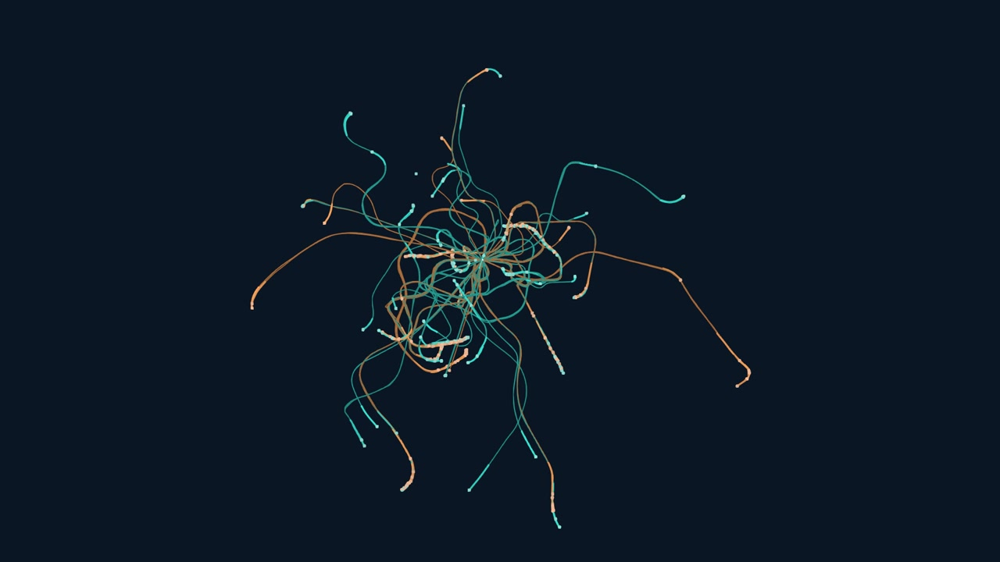
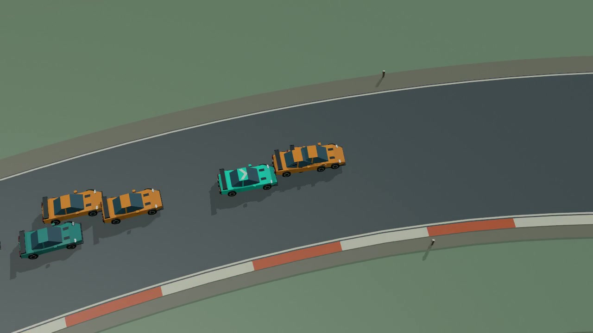
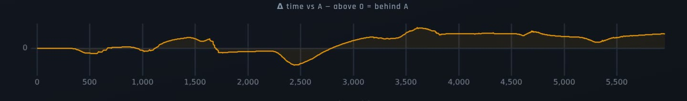
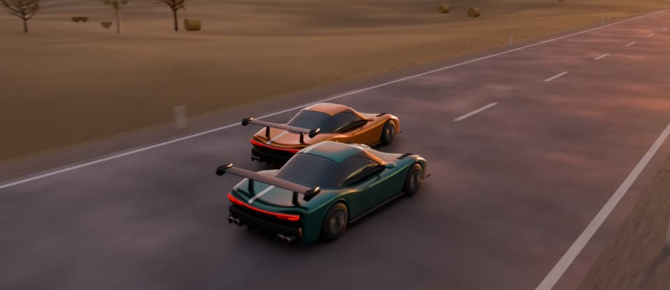
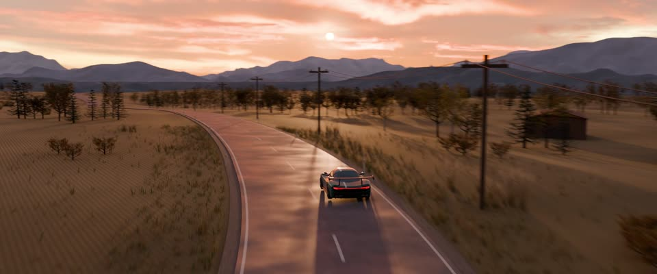
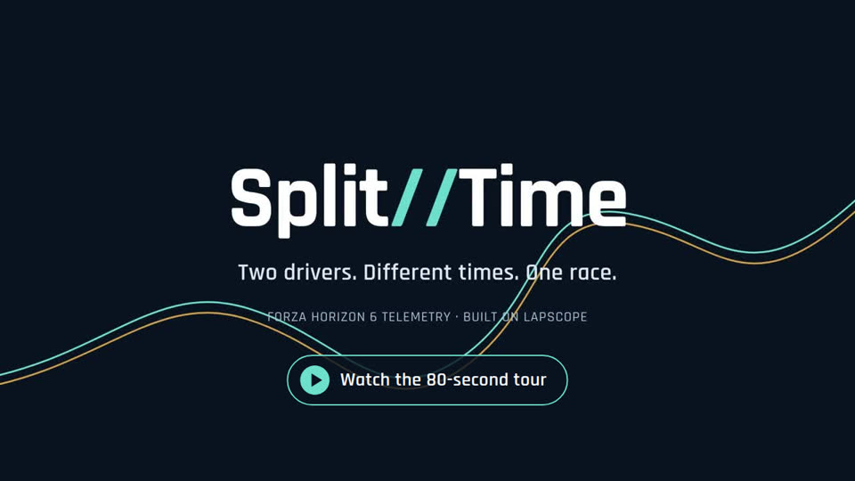

Stories
Short pieces and films made from the laps my friend FishFighterNS and I recorded, newest first.
Stories
-

Film · 23 November 2026Every run, from one start
All 299 laps we finished, on 38 routes, leave one point at the same moment, each on the path it really drove. Then the camera zooms into four laps at Shimanoyama.
-

Films · 20 November 2026Eighteen runs at Shikisai
Every run we finished on one road in one car, raced as ghosts, with a roadside view of Corner 2 and a version with a race announcer.
-

Repair note · 5 November 2026Three laps found
We thought three laps had lost their finish. They hadn’t. Two bugs that made good laps look wrong, and what can’t be recovered.
Videos
-

Film · 27 November 2026Redline · Daikoku Chase
Our two runs at Daikoku Chase in the same Aston Martin Vulcan, rebuilt in Blender: Fish leads at the crest, Compass comes back to win by 0.38 seconds. 28 seconds, with car sound or with commentary.
-

Clip · 26 November 2026Redline V12
One lap goes from a line on the map to a wireframe sketch to a finished car on a sunset road, made in Blender. 16 seconds.
-

Tour · 30 October 2026The 80-second tour
Live, Rivalry, race replay, the AI race engineer, traces and corners, Stats and the weekly recap, recorded from our real data.